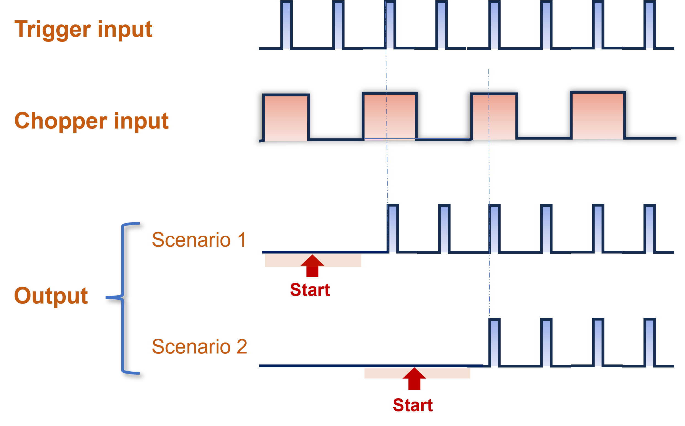
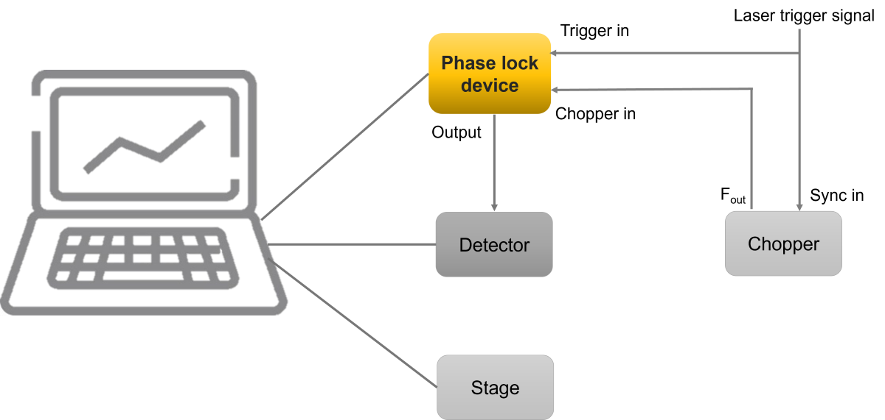

专为泵浦探测实验设计，最简单有效的判断瞬态吸收信号的相位
请访问我们的网店 →获取价格。
相位锁定装置是一种根据输入触发信号和斩波器输入信号的状态提供精确触发信号输出的设备。该装置配备了Type-C端口，用于供电和电脑连接，并且通过LabVIEW软件对该设备进行控制。通过对电路板的优化，使得实时信号处理的延迟低于20 ns。此外，该设备低功耗设计不仅最大程度地减少了热量的产生，而且显著提高了其使用寿命和可靠性。

相位锁定装置的输入与输出
相位锁定装置非常适用于瞬态吸收光谱和其它基于泵浦探测技术的实验，包括二维电子光谱（2D ES）和瞬态吸收成像（TAM）。它能够有效区分探测光谱中对应的有无泵浦光脉冲的情况，实现瞬态吸收信号的相位锁定。此外，我们提供LabVIEW子VI，方便地与您现有的LabVIEW控制软件集成，增强了在各种实验设置中的通用性。

瞬态吸收实验的应用实例
| 名称 | 描述 |
|---|---|
| 通信端口 | Type-C端口，用于供电和控制 |
| 触发信号延迟 | ≤ 20 ns |
| 激光脉冲频率 | ≤ 200 kHz |
| 电脑响应时间 | ~ 3 ms |
| BNC输入电压范围 | 2 ~ 5 V |
| BNC输出电压 | 5 V |